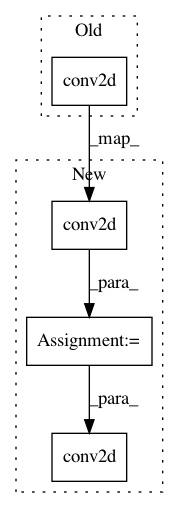

edce51a1976684e5a0cc1eef791d2c7aee72fc0d,hypergan/discriminators/densenet_discriminator.py,,discriminator,#Any#Any#Any#Any#Any#,6
Before Change
if batch_norm is not None:
net_dense = batch_norm(config["batch_size"]*2, name="d_expand_bna_"+str(i*10+j))(net_dense)
net_dense = activation(net_dense)
nets.append(conv2d(net_dense, size_dense, name="d_expand_layear"+str(i*10+j), k_w=3, k_h=3, d_h=1, d_w=1))
net = tf.concat(3, [net]+nets)
net = tf.nn.avg_pool(net, ksize=filter, strides=stride, padding="SAME")
After Change
net_dense = activation(net_dense)
if batch_norm is not None:
net_dense = batch_norm(config["batch_size"]*2, name="d_expand_bna_"+str(i*10+j))(net_dense)
newnet = conv2d(net_dense, size_dense, name="d_expand_layear"+str(i*10+j), k_w=3, k_h=3, d_h=1, d_w=1)
net = tf.concat(3, [net, newnet])
net = tf.nn.avg_pool(net, ksize=filter, strides=stride, padding="SAME")
net = activation(net)
if batch_norm is not None:
net = batch_norm(config["batch_size"]*2, name="d_expand_b2na_"+str(i*10+j))(net)
net = conv2d(net, int(net.get_shape()[3]), name="d_expand_la4year"+str(i*10+j), k_w=1, k_h=1, d_h=1, d_w=1)
print("[discriminator] layer", net)
k=-1
In pattern: SUPERPATTERN
Frequency: 3
Non-data size: 4
Instances
Project Name: HyperGAN/HyperGAN
Commit Name: edce51a1976684e5a0cc1eef791d2c7aee72fc0d
Time: 2017-01-06
Author: martyn@255bits.com
File Name: hypergan/discriminators/densenet_discriminator.py
Class Name:
Method Name: discriminator
Project Name: HyperGAN/HyperGAN
Commit Name: d0334962f6602fd835b0ed7219a972ebc36bb0fd
Time: 2017-03-23
Author: mikkel@255bits.com
File Name: hypergan/discriminators/pyramid_discriminator.py
Class Name:
Method Name: discriminator
Project Name: brightmart/text_classification
Commit Name: 82f73d86efa56ff3316328b3f75bd3516a88a49a
Time: 2018-10-15
Author: jannis.born@gmx.de
File Name: a07_Transformer/a2_poistion_wise_feed_forward.py
Class Name: PositionWiseFeedFoward
Method Name: position_wise_feed_forward_fn